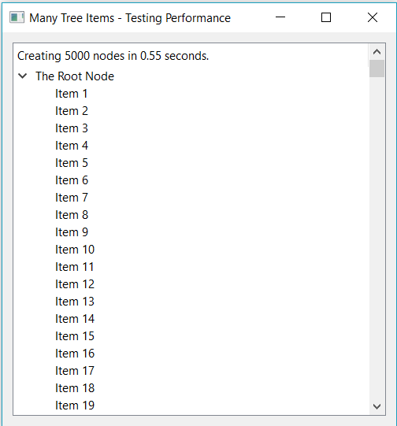

Performance Tips¶
In this chapter we will learn more about the Ring performance.
Introduction¶
Ring is designed to be a simple, small and flexible language in the first place, but also it is fast enough for many applications.
Ring can do each of the next tasks in around 1 second using normal computers in the market during the last 5 years
- Compiling 100,000 lines of code
- Executing empty loop that count from 1 to 10,000,000
- Executing 1000 search operation using linear search in a list contains 100,000 items, trying to find the last item (The worst case)
- Creating list contains 1,000,000 items then summing all of the list items
- Adding 20,000 items to the ListWidget in GUI applications
- Adding 5,000 nodes to the TreeWidget in GUI applications
- Printing 10,000 messages to the terminal in Console applications
Also when we need more speed we can use C/C++ extensions!
Example:
? "Create list contains 100,000 items"
aList = 1:100000
? "Do 1000 search operation - Find the last item (Worst Case!)"
c = clock()
for t = 1 to 1000
find(alist,100000)
next
? "Time: " + ( clock() - c ) / clockspersecond() + " seconds"
Output:
Create list contains 100,000 items
Do 1000 search operation - Find the last item (Worst Case!)
Time: 0.87 seconds
Example:
load "guilib.ring"
func main
new qApp {
win = new qWidget() {
move(100,100) resize(500,500)
setWindowTitle("Many Tree Items - Testing Performance")
tree = new qTreeWidget(win) {
blocksignals(True) setUpdatesEnabled(False)
root = new qTreeWidgetItem()
root.setText(0,"The Root Node")
t1 = clock()
for t = 1 to 5000
oItem = new qTreeWidgetItem()
oItem.settext(0,"Item " + t)
root.addchild(oItem)
next
cTime = (clock()-t1)/clockspersecond()
setHeaderLabel("Creating 5000 nodes in " + cTime + " seconds.")
addTopLevelItem(root)
expanditem(root)
blocksignals(False) setUpdatesEnabled(True)
}
oLayout = new qVBoxLayout() {
addWidget(tree)
}
setLayout(oLayout)
show()
}
exec()
}
Output:
Creating Lists¶
Example:
? "Create the list using the Range operator"
t1 = clock()
aList = 1:1000000
? "Time : " + ((clock()-t1)/clockspersecond()) + " seconds"
? "Create the list using the For loop"
t1 = clock()
aList = []
for x = 1 to 1000000
aList + x
next
? "Time : " + ((clock()-t1)/clockspersecond()) + " seconds"
? "Create the list using the list() function and the For loop"
t1 = clock()
aList = list(1000000)
for x = 1 to 1000000
aList[x] = x
next
? "Time : " + ((clock()-t1)/clockspersecond()) + " seconds"
Output:
Create the list using the Range operator
Time : 0.48 seconds
Create the list using the For loop
Time : 0.79 seconds
Create the list using the list() function and the For loop
Time : 1.56 seconds
Note
Creating lists using the Range operator is faster than using the For loop or the list() function
Arithmetic Operations¶
Example:
? "Using * operator"
t1 = clock()
for x = 1 to 1000000
out = x * 2
next
? "Time : " + ((clock()-t1)/clockspersecond()) + " seconds"
? "Using *= operator"
t1 = clock()
for x = 1 to 1000000
out = x
out *= 2
next
? "Time : " + ((clock()-t1)/clockspersecond()) + " seconds"
Output:
Using * operator
Time : 1.34 seconds
Using *= operator
Time : 0.47 seconds
Note
Using the *= operator is faster that using the * operator
Using len() and For Loops¶
Example:
aList = 1:1000000
? "Using len() in the For loop"
t1 = clock()
for x = 1 to len(aList)
next
? "Time : " + ((clock()-t1)/clockspersecond()) + " seconds"
? "Using len() before the For loop"
t1 = clock()
nMax = len(aList)
for x = 1 to nMax
next
? "Time : " + ((clock()-t1)/clockspersecond()) + " seconds"
Output:
Using len() in the For loop
Time : 5.50 seconds
Using len() before the For loop
Time : 0.24 seconds
Note
Using len() before the For loop is faster than using len() in the For loop.
Calling Functions and Methods¶
Example:
? "calling 100000 functions"
t1 = clock()
for x = 1 to 100000
test()
next
? "Time : " + ((clock()-t1)/clockspersecond()) + " seconds"
o1 = new test
? "calling 100000 methods using the dot operator"
t1 = clock()
for x = 1 to 100000
o1.test()
next
? "Time : " + ((clock()-t1)/clockspersecond()) + " seconds"
? "calling 100000 methods using braces "
t1 = clock()
for x = 1 to 100000
o1 { test() }
next
? "Time : " + ((clock()-t1)/clockspersecond()) + " seconds"
func test
class test
func test
Output:
calling 100000 functions
Time : 0.28 seconds
calling 100000 methods using the dot operator
Time : 0.36 seconds
calling 100000 methods using braces
Time : 1.19 seconds
Note
Calling functions is faster than calling methods but the difference is very small.
Note
Using the dot operator to call methods is faster than using braces.